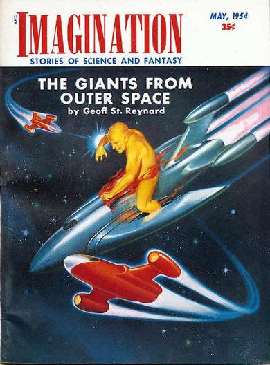

Séries de Televisão
Fonte: Wikipédia
Stranger Things
Stranger Things é uma série de televisão via streaming estadunidense dos gêneros ficção científica  Ficção científica: gênero da ficção especulativa que lida com temas imaginativos, futuros, ciência e tecnologia. terror, suspense e drama adolescente, criada, escrita e dirigida pelos irmãos Matt e Ross Duffer para a plataforma Netflix. Os irmãos Duffer, Shawn Levy e Dan Cohen são também os produtores executivos. A série apresenta em seu elenco os nomes de Winona Ryder, David Harbour, Finn Wolfhard, Millie Bobby Brown, Gaten Matarazzo, Caleb McLaughlin, Noah Schnapp, Natalia Dyer, Charlie Heaton, Joe Keery, Cara Buono e Matthew Modine, enquanto Sadie Sink, Dacre Montgomery, Sean Astin, Paul Reiser, Maya Hawke, Priah Ferguson e Brett Gelman foram incluídos no elenco em temporadas posteriores. A primeira temporada da série estreou em 15 de julho de 2016 e se passa na cidade fictícia de Hawkins, Estados Unidos, durante a década de 1980, quando um menino de doze anos chamado Will Byers desaparece misteriosamente. Pouco depois, Onze, uma garota aparentemente fugitiva com poderes telecinéticos, conhece Mike, Dustin e Lucas, amigos de Will, e os ajuda na busca por Will. A segunda temporada estreou em 27 de outubro de 2017 e se passa um ano após os eventos da primeira temporada. É abordado as tentativas dos personagens de retornar à normalidade e das consequências que persistem desde o ano anterior, onde Will fica com sequelas do mundo invertido. A terceira temporada estreou em 4 de julho de 2019 e é ambientada no verão americano de 1985, onde os personagens precisam lidar com o início da adolescência e de novos eventos sobrenaturais após a abertura de um shopping na cidade e a chegada de uma perigosa equipe russa que planeja abrir o portal do mundo invertido. Em 30 de setembro de 2019, Netflix renovou a série para uma quarta temporada, posteriormente a Netflix confirmou a estreia da quarta temporada, dividida em 2 volumes, que estrearam em 27 de maio 2022 e 1 de julho de 2022. Também foi confirmado que a quinta temporada será a última da série. No dia 31 de maio de 2025 a Netflix publicou as datas de lançamento da quinta e última temporada da série, que será dividida em 3 volumes.
Stranger Things
| Formato | Série de televisão |
|---|---|
| Gêneros | |
| Criadores | Matt Duffer Ross Duffer |
| Emissora | Netflix |
|---|---|
| Transmissão | 15 de julho de 2016 – presente |
Os irmãos Duffer desenvolveram a premissa da série em meados de 2015, e no roteiro original, o projeto se chamaria Montauk, e seria ambientado na cidade de mesmo nome localizada em Nova Iorque, abordando as teorias da conspiração envolvendo os experimentos secretos do governo americano em uma base militar na cidade no início da década de 1980. Após a definição do roteiro, os irmãos Duffer incluíram várias referências aos elementos culturais daquela década, como filmes de ficção científica, terror sobrenatural e ação e aventura, bem como videogames, animes e música, além de inúmeras referências a obras de Steven Spielberg, John Carpenter e Stephen King, considerados as grandes inspirações dos irmãos Duffer para a realização do projeto. Eles também se inspiraram em estranhos experimentos que aconteceram durante a Guerra Fria e em teorias da conspiração do mundo real envolvendo experimentos secretos do governo.
Resumo
1ª temporada (2016) Ver artigo principal: Stranger Things (1.ª temporada) Em novembro de 1983, o estudante Will Byers é abduzido por uma criatura de uma realidade alternativa chamada "Mundo Invertido", causando mistério e pavor aos habitantes de Hawkins, Indiana. Sua mãe, Joyce Byers, tenta encontrar seu paradeiro com a ajuda do xerife Jim Hopper, enquanto Mike Wheeler, Dustin Henderson e Lucas Sinclair fazem outra investigação para encontrá-lo, porém são surpreendidos quando uma estranha garota com poderes telecinéticos chamada Onze aparece na cidade. Onze é uma fugitiva do Laboratório Nacional de Hawkins, localizado nas proximidades, que faz ostensivamente pesquisas científicas para o Departamento de Energia dos Estados Unidos e realiza secretamente experimentos paranormais e sobrenaturais em humanos.
Elenco e personagens
A lista abaixo contém os atores que foram creditados como regulares da série. Atores que são apenas recorrentes e convidados são listados nas páginas individuais das temporadas.
- Winona Ryder como Joyce Byers: a mãe de Will e Jonathan Byers. Ela é divorciada de Lonnie Byers. Seu filho Will desaparece, iniciando a trama. Na segunda temporada, ela mantém um relacionamento com seu antigo colega de classe, Bob, embora ela e o delegado Hopper tenham sentimentos um pelo outro.
- David Harbour como Jim Hopper: o delegado de Hawkins, que investiga o desaparecimento de Will. Ele é um ex-policial de Nova York que se mudou para Hawkins após a morte de sua filha, Sarah. Na segunda temporada, ele se torna o guardião de Onze.
- Finn Wolfhard como Mike Wheeler: um dos amigos de Will, que se torna próximo de Onze. Ele é o líder do grupo e tem sentimentos românticos por Onze.
- Millie Bobby Brown como Onze: uma garota com habilidades telecinéticas que escapa do laboratório e se junta ao grupo de amigos de Will. Ela é conhecida por sua aparência careca na primeira temporada, mas depois cresce o cabelo.
- Gaten Matarazzo como Dustin Henderson: um dos amigos de Will, que é conhecido por seu senso de humor e sua dentição incomum. Ele é leal ao grupo e ajuda a encontrar Will.
- Caleb McLaughlin como Lucas Sinclair: outro amigo de Will, que é cético em relação a Onze no início, mas acaba se tornando seu aliado. Ele é corajoso e determinado.